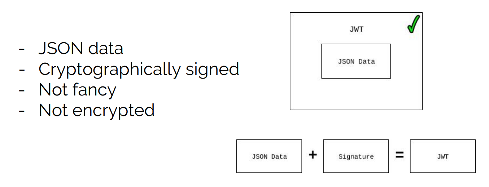
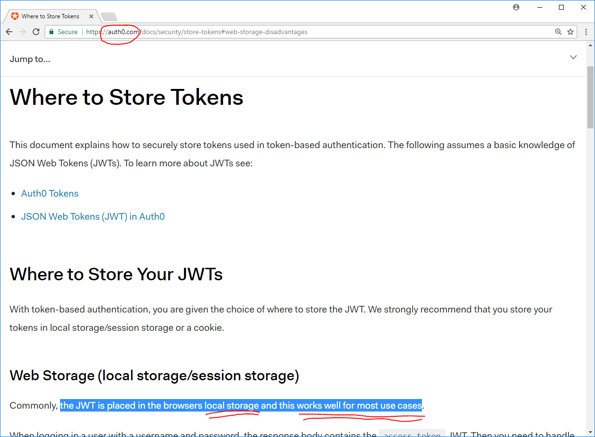
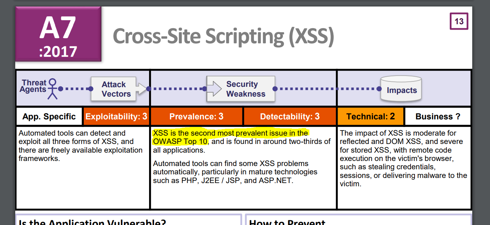
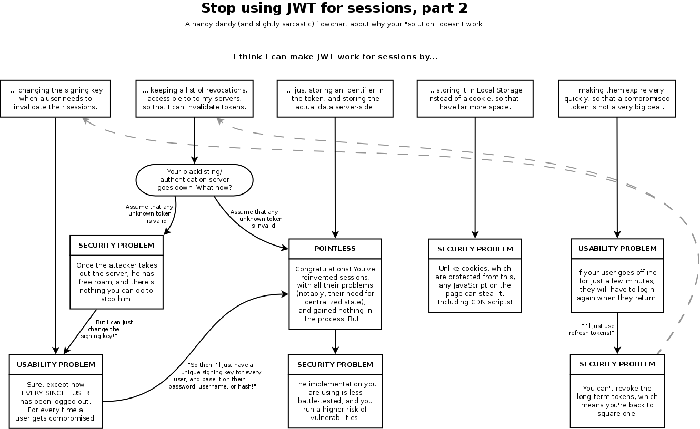

CodeMash 2018 Debrief
Jan 9–12
Sandusky, Ohio
JSON Web Tokens Suck
A talk by Randall Degges

What are JWTs?
What Do JWTs Actually Do?
Prove that some JSON data can be trusted
How Do People Typically Use JWTs?
As identity proof
What does this look like?
- User sends credentials to website to login
- Website validates credentials, generates JWT
- Website sends response to browser containing JWT
- Browser then stores JWT in localStorage
- Browser pulls JWT out of localStorage and sends it to website for subsequent requests
Local storage?
Secret Session Token?
"No one would do that"
Why is localStorage dangerous?
"My JS framework protects me from XSS"
-
Angular →
$sce.trustAsHtml(userInput); -
React →
<span dangerouslySetInnerHTML={userInput} /> - Server side → rendering user input into the page
Even if your code has no XSS vulnerabilities...
Do you include any of the following scripts?
- Google Analytics?
- New Relic?
- Chat agent?
- Ad network?
- Libraries from a CDN?
- Anything from a CDN?
- Other 3rd party integrations?
"I'll just use Subresource Integrity"
<script src="https://example.com/framework-1.2.3.js"
integrity="sha384-oqVuAfXRK...stuff...PzQho1wx4JwY8wC">
</script>Except your 3rd party integration looks more like:
<script src="https://example.com/constantly-changing-code.js">
</script>
To Recap
Secret Session Token + JavaScript
Where should we store our Secret Session Token?
Session Cookies
Cookie Security Problems
- Not using
HttpOnly - CSRF
- Cross-subdomain shenanigans
HttpOnlycookies don't prevent XSS
Most Developers Don't Understand CSRF
- "Actions are only accessible via POST"
- "My site requires AuthN"
- "Our controllers only expect JSON"
That's OK. Your framework solves it for you.
services.AddAntiforgery(options => options.HeaderName = "X-XSRF-TOKEN");Also the new SameSite option for Set-Cookie prevents it
Also CSRF isn't even in the OWASP 2017 top 10
Cross-subdomain shenanigans
evil.example.com sets a cookie for .example.com
Evil cookie gets served to www.example.com
Session Fixation Attack
All modern session cookie implementations
use cryptographically signed cookies
HttpOnly cookies don't prevent XSS
Requests made by your browser include HttpOnly cookies
If an attacker can run JavaScript in your browser, they can make requests
/thread
Except there's a big difference between:
- Attacker can perform attack while victim has their browser open
- Attacker can perform attack at their leisure for hours if not days or weeks
And:
- The small amount of code needed to exfiltrate secret session token
- The potentially large amount of code needed to perform the attack
Code size matters for exploitability
Content-Security-Policyheader- Code reviews
HttpOnly cookies make XSS a lot harder
HttpOnly Cookies > localStorage
(For secret sesssion tokens)
Session Cookies vs JWTs
- "JWTs are easy to use" → so are session cookies
- "JWTs have built-in expiration" → so do session cookies
- "JWTs are cryptographically signed" → so are session cookies
- "JWTs are more secure" → the spec is literally insecure
- "JWTs are sent only when needed" → they're so big it doesn't matter
- "JWTs are stateless" → until you want to invalidate sessions
- "JWTs don't need cookie consent" → any tracking requires consent
- "JWTs prevent CSRF" → no
Session Cookies vs JWTs
By @joepie91
Don't use JWTs to re-invent sessions
What are JWTs good for?
- Short-lived tokens
- That are... single-use
Good uses of JWTs
- Password reset token
- Token to download file
- Token to trade for session in distributed system
What if you're an OpenID Connect consumer?
In Coffee we delegate auth to Azure AD
I asked Randall about this after his talk
- Store JWT in cookie
- Use
authorization_codeflow
Slides at: codetinkerer.com/presentation-jwts-suck/